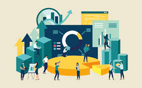
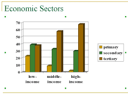
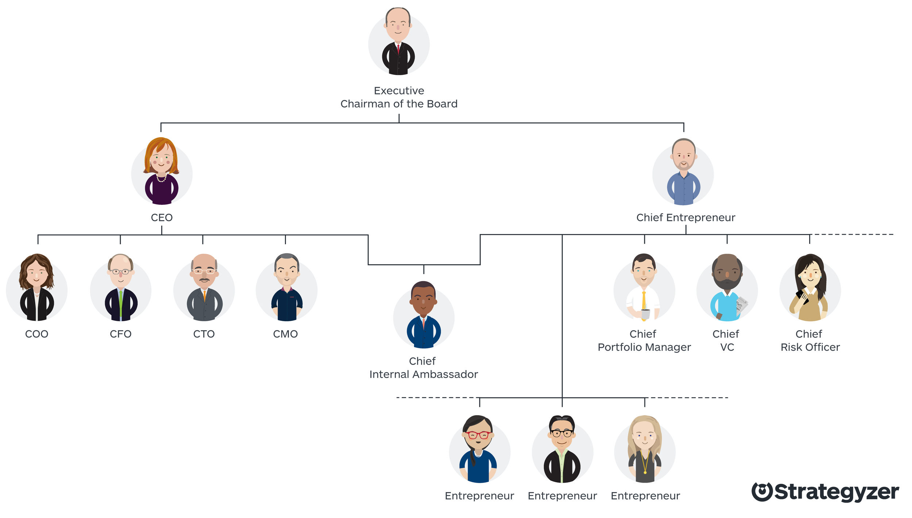
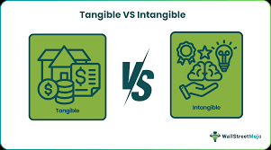
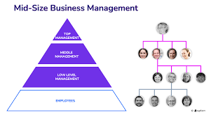

Argomento: L'Azienda

Un'azienda è un'organizzazione economica composta da persone, beni, conoscenze, capitale e tecnologia, destinata a durare nel tempo.
Il suo obiettivo fondamentale è soddisfare i bisogni umani svolgendo attività di produzione, scambio o consumo di beni e servizi.
Le aziende svolgono queste attività attraverso la produzione di beni destinati al consumatore finale o ad altre aziende, l'erogazione di servizi e il consumo di risorse necessarie alla produzione stessa.

| Settore | Descrizione | Esempi |
|---|---|---|
| Primario | Sfruttamento delle risorse naturali | Agricoltura, pesca, estrazione petrolio |
| Secondario | Trasformazione in nuovi beni | Industria manifatturiera |
| Terziario | Servizi e beni immateriali | Banche, trasporti, commercio |
| Terziario Avanzato | Servizi digitali | Informatica, telematica |
La filiera è il percorso di un bene dalla produzione al consumo, ovvero la successione di attività e soggetti coinvolti.
| Tipo | Obiettivo | Esempi |
|---|---|---|
| Profit Oriented | Realizzare utili (ricavi maggiori dei costi) | Audi, Amazon, Ferrero |
| Pubblica Amministrazione | Fornire servizi pubblici finanziati da imposte | Scuole, ospedali, INPS |
| Non Profit | Finalità sociali, culturali o solidali | WWF, Emergency, Save the Children |

È la figura centrale che fonda l'azienda e prende le decisioni strategiche. Secondo l'Art. 2082 del Codice Civile, esercita professionalmente un'attività economica organizzata per produrre o scambiare beni o servizi.
| Categoria | Ruolo |
|---|---|
| Dirigenti | Figure di vertice con importanti poteri decisionali |
| Quadri | Responsabili di uffici o reparti specifici |
| Impiegati | Mansioni prevalentemente intellettuali |
| Operai | Mansioni prevalentemente manuali nei reparti di produzione |
I collaboratori esterni sono lavoratori autonomi o professionisti come commercialisti o avvocati, retribuiti con compenso pattuito di volta in volta.


L'organizzazione stabilisce chi fa cosa, come e quando. I due obiettivi principali sono l'efficacia, ovvero raggiungere l'obiettivo prefissato, e l'efficienza, ovvero raggiungerlo al minor costo possibile.
Il potere decisionale è distribuito secondo un modello piramidale a tre livelli.
Sono il cuore dell'azienda, senza di esse non potrebbe esistere.
Le attività sono raggruppate per funzioni come acquisti, produzione e marketing. È caratterizzata da forte gerarchia piramidale e alta specializzazione. È adatta a piccole e medie imprese con un solo prodotto in un ambiente stabile.
L'azienda è divisa in divisioni autonome per prodotto, cliente o area geografica. Ogni divisione ha ampia autonomia, quasi come un'azienda a sé. È adatta a grandi multinazionali con più prodotti, come Samsung.
Combina simultaneamente due criteri, ad esempio funzioni e progetti. I dipendenti rispondono a due superiori: il responsabile di funzione e il responsabile di progetto. È adatta ad aziende che lavorano in ambienti molto instabili con continua innovazione, come quelle che sviluppano software complessi.
Ho scelto l'azienda come argomento di GPOI perché è uno dei temi più concreti e vicini alla realtà che abbiamo affrontato durante l'anno.
Capire come è strutturata un'azienda, come vengono prese le decisioni e come si organizza il lavoro mi ha dato una prospettiva utile anche per i miei progetti personali, come la gestione del team di Shard, dove di fatto applico ogni giorno questi concetti senza averli mai formalizzati.